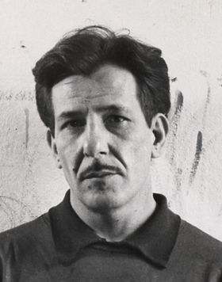

Franz Kline

Franz Kline (1910-1962) foi um pintor norte-americano, associado ao movimento de arte abstrata conhecido como Expressionismo Abstrato. Kline ficou famoso por suas grandes pinturas gestuais, feitas com pinceladas vigorosas e fortes contrastes de preto e branco. Suas obras expressam emoção e movimento, muitas vezes representando a espontaneidade e a energia do momento.
Maiores Obras:

Mahoning

Black and White

Suspended